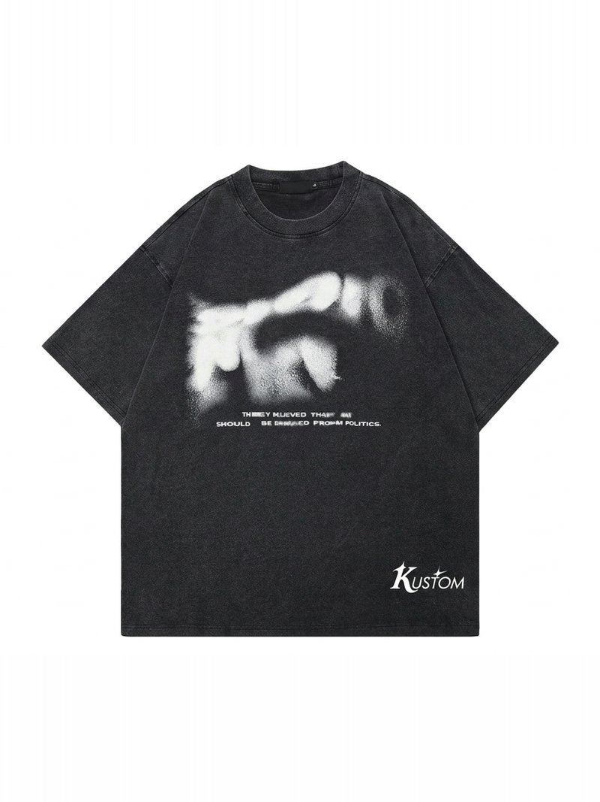
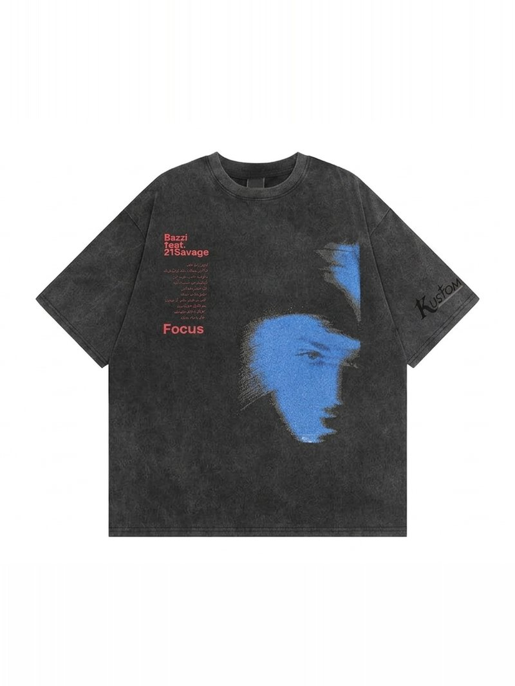
Remeras
Remeras oversize de algodón lavado, con estampas propias y el logo de Kustom en el diseño.
Consultar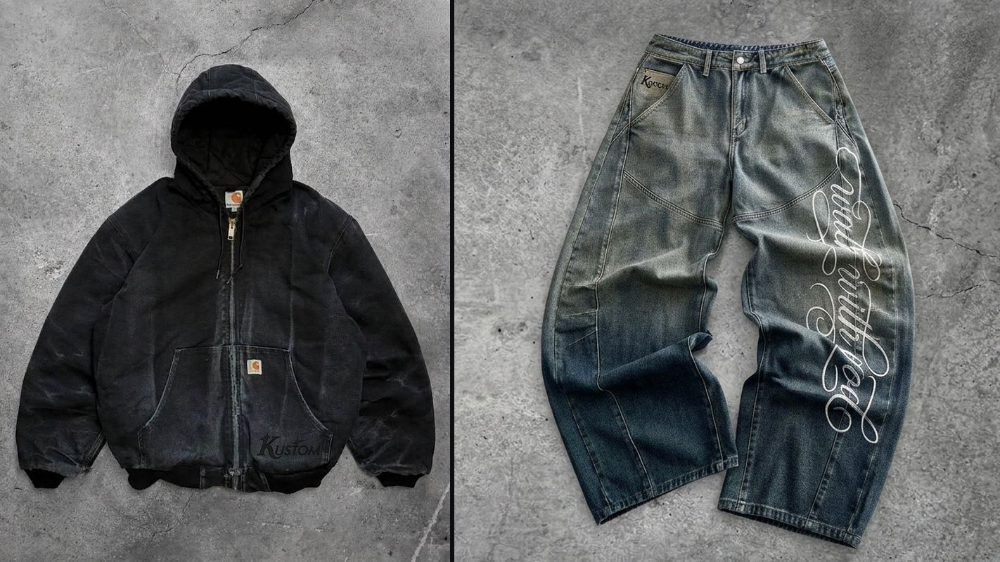
Kustom es una marca de ropa streetwear hecha en Argentina. Con cada drop sacamos prendas nuevas, en cantidades limitadas, pensadas para la calle y para el día a día. Mirá las colecciones y elegí la tuya.
Ver colecciones

Remeras oversize de algodón lavado, con estampas propias y el logo de Kustom en el diseño.
Consultar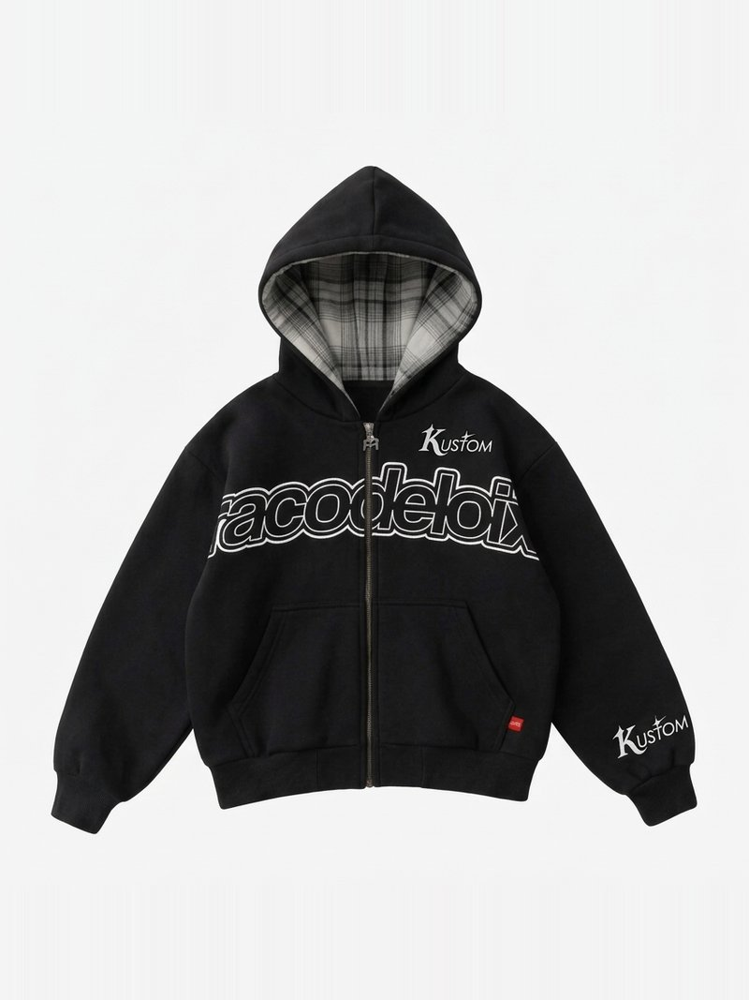
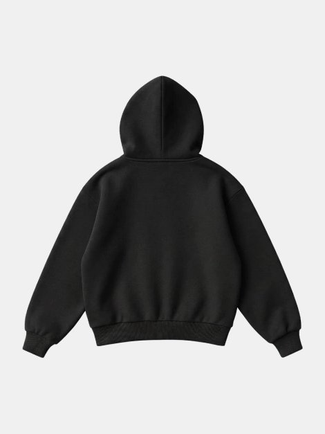
Buzo con cierre y capucha forrada a cuadros, con el logo de Kustom en el pecho y en la manga.
Consultar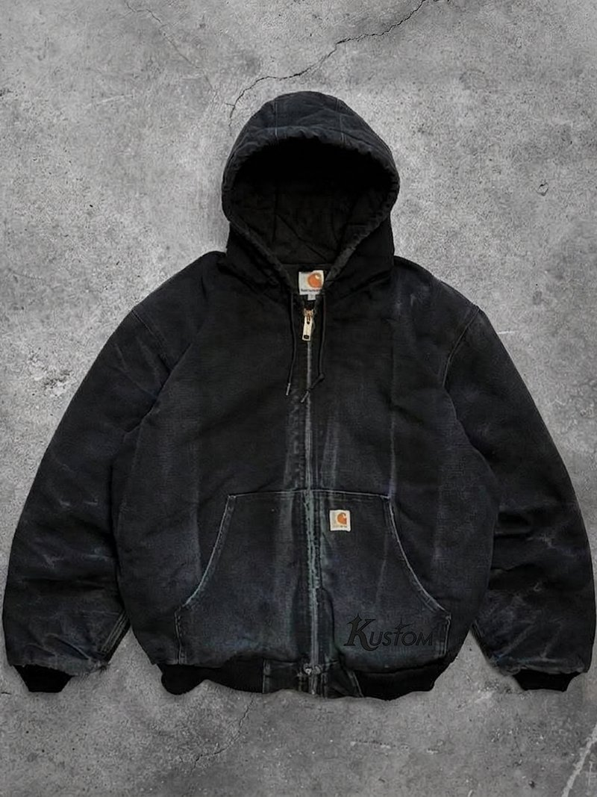
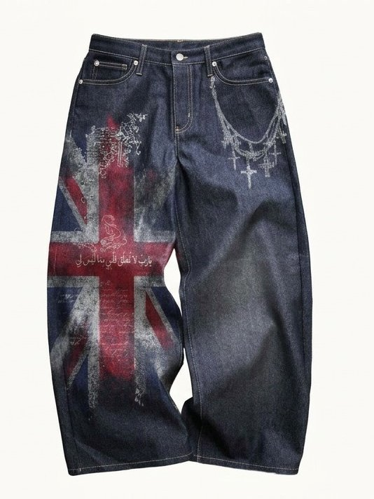
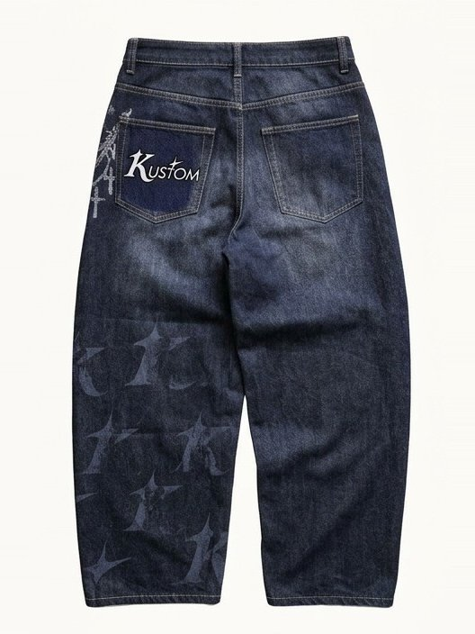
Jean baggy azul oscuro con estampas gráficas y una cadena con cruces dibujada.
Consultar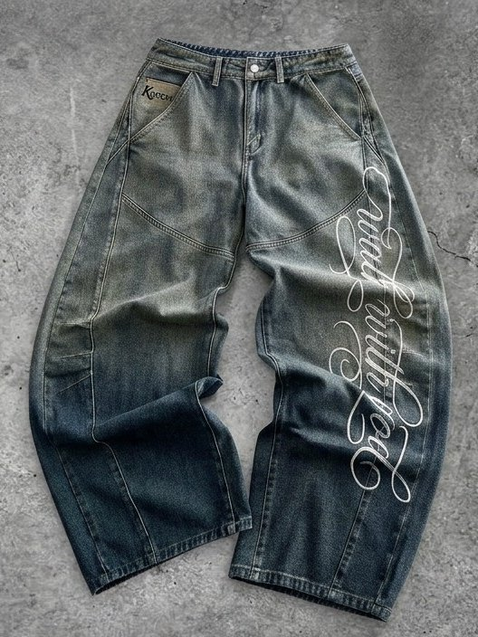
Jean baggy con lavado desteñido y letras estampadas a lo largo de la pierna.
Consultar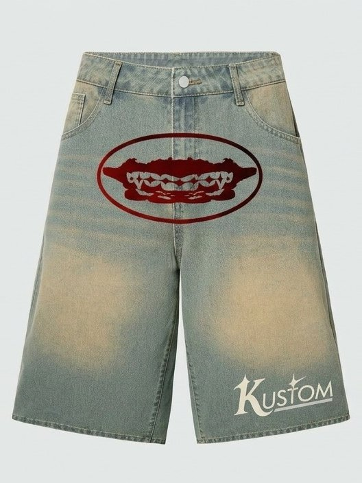
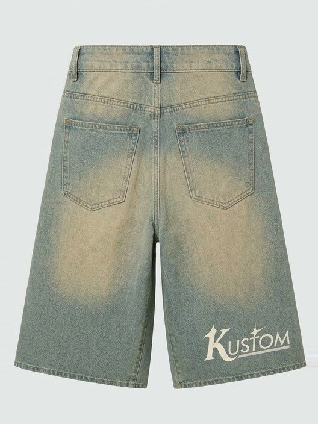
En compras mayores a $150.000
Con todas las tarjetas
Con todos los bancos
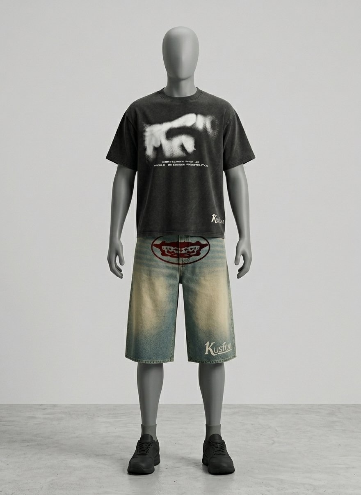
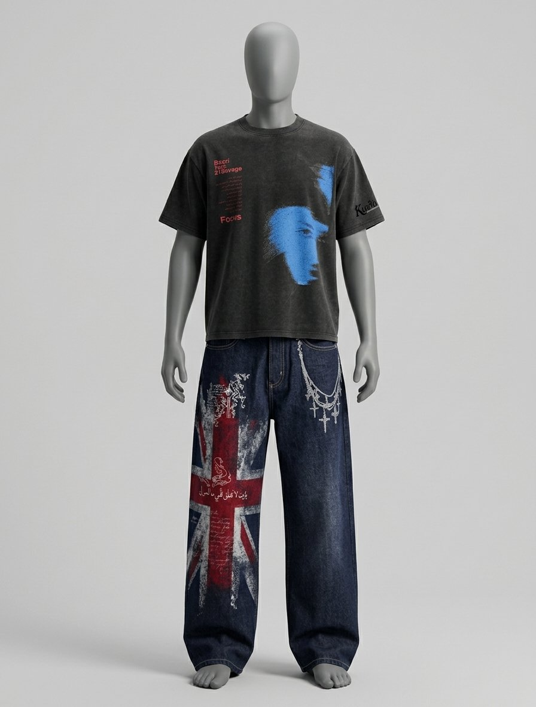
El streetwear, o ropa de calle, nació en Estados Unidos con la mezcla de culturas como el skate, el surf, el graffiti y el punk. Es un estilo cómodo y auténtico, donde la ropa sirve para mostrar quién sos.
Hacemos ropa urbana argentina, pensada para durar y con diseños propios. Nos gusta la moda y la estética de la calle, y queremos que cada prenda te ayude a expresar tu identidad.
Nuestro local está en el AMBA. Escribinos y te pasamos la dirección y los horarios.
Drops y contenido de la comunidad.
Videos y detrás de escena.
Historia del movimiento global.